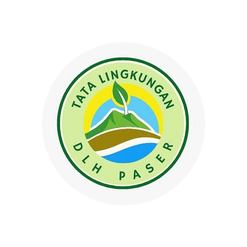

Selamat datang di Kalimantan Timur, di mana alam tak hanya indah, tapi juga bijak memeluk keanekaragaman dan merawat warisan budaya dalam damai.
Pada mulanya Desa Kerta Bumi adalah merupakan wilayah Desa Modang, namun dengan seiringnya waktu program pemerintah melalui Departemen Transmigrasi maka diadakan program Transmigrasi ke wilayah Desa Modang. Adapun warga yang mengikuti Transmigrasi berasal dari suku Jawa, Sunda dan NTT. Itu terjadi pada tahun 1987, 1988 dan 1990. Jumlah penduduk warga Transmigrasi dari ketiga suku adalah 500 Kepala Keluarga (KK). Seiring perkembangan zaman warga Transmigrasi ingin memisahkan diri dari Desa Modang dan terjadilah dialog antara warga Transmigrasi dan pemerintahan Desa Modang. Dalam dialog tersebut terjadilah kesepakatan bahwa warga Transmigrasi boleh memisahkan diri dari Desa Modang dan membentuk sebuah Desa ...
Lihat selengkapnya
Setiap sudut Taman Kehati mengajarkan kita bahwa alam perlu dijaga, dihargai, dan diwariskan untuk generasi berikutnya.
Taman Kehati bukan sekadar ruang hijau, tapi juga tempat belajar tentang pentingnya menjaga keanekaragaman hayati di sekitar kita.

Air Terjun Doyam Dinding Olo terletak di Desa Modang, Kabupaten Paser...

Puncak Bukit DAR di Desa Modang, Kecamatan Kuaro...

Tugu Desa Kerta Bumi adalah salah satu landmark...

Konservasi Mangrove Modang di Desa Modang, Kecamatan Kuaro...

Sungai 21 Kertabumi adalah destinasi wisata alam di Desa Kerta Bumi...